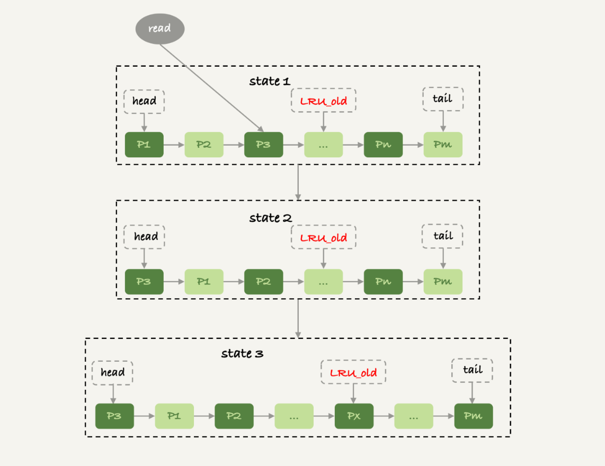

查询和内存
取发数据流程
- 获取一行，写到 net_buffer 中。这块内存的大小是由参数 net_buffer_length 定义的，默认是 16k。
- 重复获取行，直到 net_buffer 写满，调用网络接口发出去。
- 如果发送成功，就清空 net_buffer，然后继续取下一行，并写入 net_buffer。
- 如果发送函数返回 EAGAIN 或 WSAEWOULDBLOCK，就表示本地网络栈（socket send buffer）写满了，进入等待。直到网络栈重新可写，再继续发送。

Buffer Pool的内存改进版LRU算法
- 
查询区别
- mysql_use_result 方法。这个方法是读一行处理一行
- mysql_store_result 这个接口，直接把查询结果保存到本地内存
查询语句的状态变化
- MySQL 查询语句进入执行阶段后，首先把状态设置成“Sending data”；
- 发送执行结果的列相关的信息（meta data) 给客户端；
- 再继续执行语句的流程；
- 执行完成后，把状态设置成空字符串